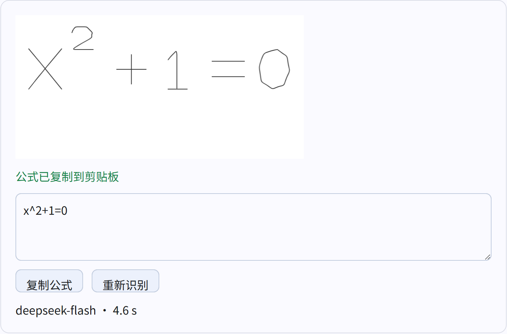

截图批注，
退出就归档。
在截图上写下思路，按 Esc 保存。再框选一个手写公式，识别为 LaTeX，放进剪贴板。
截图与批注可离线使用。公式识别需联网，并配置自己的 DeepSeek API Key。
查看使用方法
解压后，按这几个键开始。
-
启动并截图
把 ZIP 完整解压到可写文件夹，运行
AnnotationCapture.exe。按 Ctrl + Alt + S 截图，或点击“开始截图”。无需安装 Node.js、Python 或 OCR 模型。截图快捷键可在设置中修改。
-
写完，直接归档
使用画笔、文字、形状和橡皮擦完成批注。按 Esc 或 Ctrl + Enter，保存带批注的截图选区并退出。
归档按日期保存。写入失败会保留画布，修复保存位置后可重试。
-
选定公式，再识别
先在设置中填入自己的 DeepSeek API Key。批注后按 Ctrl + Shift + Enter，再框选一个公式、点击“识别选定公式”。
先归档完整截图，再识别选区笔迹。等待期间若剪贴板已有新内容，结果会保留供手动复制。
预览版的使用边界
识别后，请核对字母大小写和上下标。
本版从独立 ZIP 解压后完成本机验收。多项式、分式、根式和大小写混合四个真实 API 样例均精确匹配，并验证了剪贴板；识别结果仍可编辑后重新复制。
- 当前提供 Windows x64 版本，未做代码签名；Windows 可能提示发布者未验证。
- 输出为 LaTeX 文本，尚未适配 Math Academy 的公式输入器。
- 强制结束进程或断电时，无法保证尚未完成的批注不丢失。